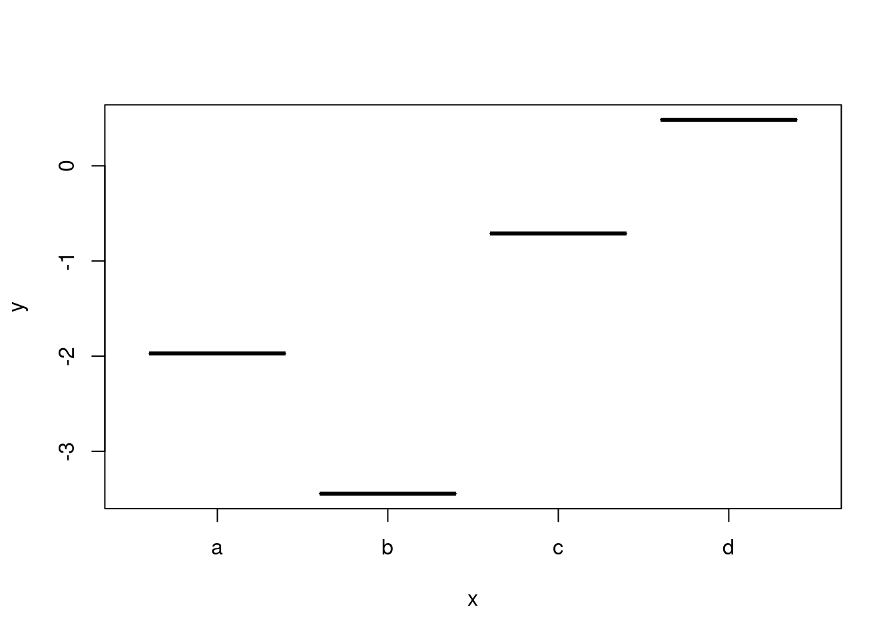
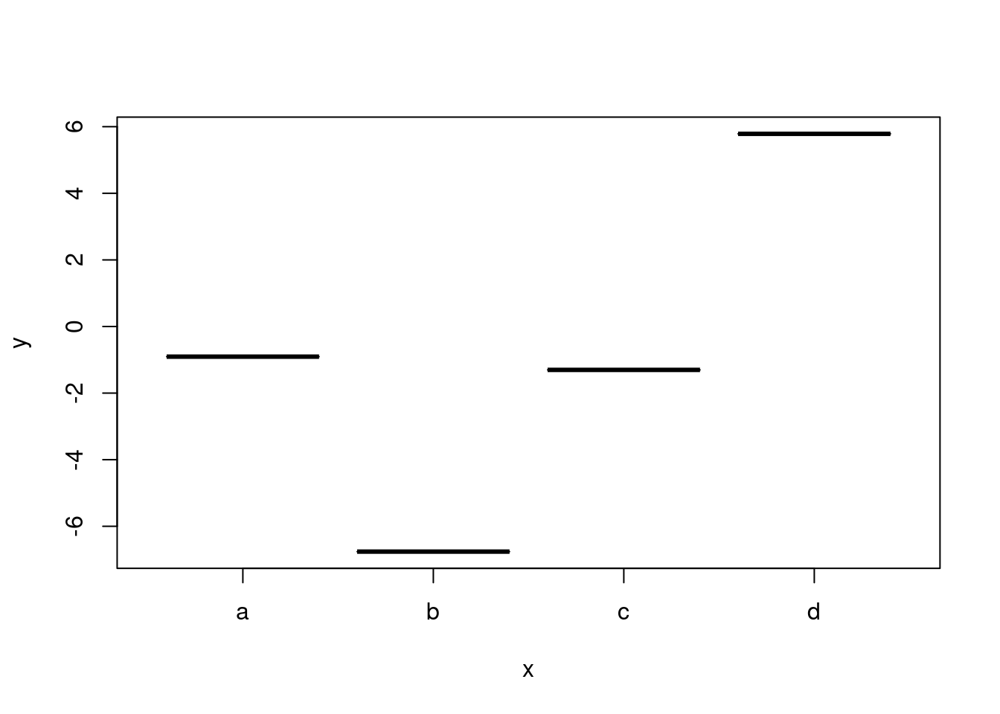

Capítulo 2 Investigación reproducible.
2.1 Introducción: alcances del problema.
El texto que está a punto de leer presentará algunos conceptos sumamente abstractos sobre las formas en que unas entidades abstractas -los programas- tratan a otras entidades abstractas -los datos. Propone una disciplina de trabajo aplicando un paradigma estricto y de comprensión no muy accesible, desarrollado en el ámbito de la cibernética, que lo retomó de las matemáticas. No en vano Randall Munroe dice que la programación funcional combina la flexibilidad y el poder de las matemáticas abstractas con la claridad intuitiva de las matemáticas abstractas. La programación funcional se desarrolló para atender problemas de desarrollo de software altamente complejo, en los que se hacía imposible o muy costoso conocer el estado de un programa en un momento dado. ¿Por qué debería interesar esto a un científico social? Porque la programación funcional hace una contribución significativa a la investigación reproducible. Dicho de otro modo, la investigación reproducible hace de la redacción –incluyendo texto y código– de un reporte, artículo, tesis o libro un problema de computación suficientemente complejo como para requerir soluciones igualmente complejas. Es claro que podemos que podemos hacer investigación reproducible sin recurrir a la programación funcional, pero a medida que aumenta la complejidad de nuestro producto –al que llamaremos y con razón programa, aunque se trate del más breve e insignificante paper– controlar la ejecución de ese programa se torna difícil. Si alguna vez intentó generar un script extenso en el que analiza una o más bases de datos usando R y notó que a medida que avanzaba pasaba más tiempo corrigiendo el código anterior que escribiendo código sabe de lo que le hablo. Si alguna vez, después de recibir un dictamen, regresó a su código para hacer algunas correcciones y notó que la base en la línea 1 no es la misma base que en la línea 134 también lo sabe.
2.2 Investigación reproducible.
Uno de los temas actuales en la investigación académica, especialmente la que se apoya en métodos cuantitativos, pasa por la investigación reproducible. Uno de los fundamentos de la ciencia –sea cual sea el paradigma desde el que nos ubiquemos– es su naturaleza pública, por eso publicamos resultados. Y hacemos públicos nuestros resultados porque buscamos que la comunidad académica los lea, critique, valide o refute. Para hacer ese proceso todavía más profundo la investigación reproducible nos llama a no solamente publicar los resultados, también los procesos que nos han llevado a ellos. De acuerdo con Rodríguez Sánchez, Pérez Luque, Bartomeu y Varela (???) los estudios científicos reproducibles son aquellos que incluyen el código informático capaz de recrear todos los resultados a partir de los datos originales, así como el texto creado por los o las autoras. De este modo otro investigador o investigadora podrá partir de los mismos datos y aplicar el mismo análisis, verificar los resultados, buscar posibles errores, retomar el análisis donde lo dejamos y continuar el trabajo. Si entendemos a la actividades científica como colectiva no es aceptable que el análisis propiamente dicho –no sólo los resultados– nunca salga de Mis documentos.
Investigación reproducible. Tomado de Rodríguez Sánchez et. al.
En principio sería suficiente con hacer públicos –siempre que sea posible– los datos y adjuntar las sintaxis con la que los analizamos. Sin embargo esto implica que debemos mantener sincronizadas “manualmente” tres estructuras diferentes: los datos, el código y el texto. En verdad es mucho más fácil hacer que todo esto funcione si contamos con una plataforma de software unificada que procese tanto los datos como el código y el texto y a partir de estos elementos produzca salidas en formatos compatibles con la publicación: LaTeX, .pdf., .docx, etc. Esa plataforma existe y es completamente gratuita: se llama R y gracias al trabajo voluntario de personas como Yihui Xie, autor de la librería knitr, ha simplificado enormemente el proceso de la investigación reproducible. Usar en conjunto knitr, pandoc y LaTeX desde Rstudio es en verdad muy fácil y estas de librerías se encargan de prácticamente todo el proceso de edición: ejecutan el código R, conservan y dan formato a los resultados, agregan números de figuras y tablas, crean la bibliografías, tablas de referencias cruzadas, numeran las páginas y, como si fuera poco, organizan la ubicación de tablas y gráficos en el documento, evitando páginas en blanco y gráficos recortados. Toda la cadena de software es open source y multiplataforma: corre exactamente igual en Linux, macOS o Windows.
2.2.1 Ventajas de la investigación reproducible.
¿Qué ventajas tiene la investigación reproducible? La ventaja para la comunidad de investigadores ya fue expuesta. Para cada investigador o investigadora también las tiene. La primera, también esbozada, es la simplificación del flujo de trabajo al utilizar una solo plataforma de software. Es innecesario pasar por el penoso trabajo de realizar el análisis en un programa –digamos, Stata–, copiar los resultados, formatearlos en otro –digamos, Excel para las tablas y/o un editor de gráficos para estos– y finalmente reunirlos en un documento de procesador de texto –digamos, Word; sólo para repetir la cadena cada vez que queremos introducir algún cambio, por mínimo que sea. Este proceso no solo es laborioso, también es propenso a errores y no deja rastros que nos permitan identificar con facilidad donde los cometimos: no hay una sintaxis o log del proceso, todo lo hicimos moviendo el ratón. Integrando todos los pasos en R los cambios, grandes o pequeños, se actualizan inmediatamente. Si hay error de sintaxis será ruidoso e interrumpirá el proceso, si hay un error conceptual o de otro tipo tendremos la sintaxis paso a paso de lo que hemos hecho y podremos identificarlo y solucionarlo. Podemos recorrer y validar el camino que nos lleva a nuestros resultados con gran facilidad. La segunda es la aplicación de control de versiones. Uno de verdad, como el que implementa el algoritmo Git, no el control de cambios de Word, que nadie en su sano juicio utiliza y por buenos motivos. Para el investigador individual significa que podemos ir hacia atrás y hacia adelante en el avance del documento, comparar cambios, regresar si el camino que tomamos no nos gusta. Esto hace obsoletas tanto las versiones con múltiples nombres de un mismo archivo como los documentos que reservamos para párrafos sueltos. Para los equipos de trabajo que no es necesario pasar versión tras versión por correo electrónico: texto y código están en un repositorio compartido y permanentemente actualizado que, si se dieran conflictos de versiones, los resuelve automáticamente. También posibilita abrir bifurcaciones para probar ideas nuevas sin alterar el original. Al final y si lo consideramos mejor podemos reunirlo con el original. La tercera es la posibilidad de reutilizar nuestro propio trabajo. No me refiero a hacer refritos para inflar el CV, me refiero a encontrarnos en el futuro con un problema que ya resolvimos y encontrar rápidamente esa solución para volver a implementarla.
2.2.2 Desafíos de la investigación reproducible.
¿Qué desafíos trae la investigación reproducible? El más inmediato es que posiblemente no estemos acostumbrados a utilizar las herramientas de software que lo implementan. No se trata de versiones diferentes de los paquetes de oficina o de análisis estadístico que usamos, se trata de software que emplea interfaces y metáforas totalmente diferentes. R, pandoc, LaTeX o Git no tienen ningún atisbo de isomorfismo, no intentan simular nuestras interacciones con objetos cotidianos para darnos una sensación de familiaridad o implementan menús para mostrarnos todas las opciones. Reciben sus comandos de manera escrita a través de una consola, misma en la que vemos los resultados, se manejan exclusivamente con archivos de texto que debemos editar con cuidado. Esta familia de software tiene una característica común: la curva de aprendizaje tiene pendiente alta al principio. R hace difícil lo fácil y fácil lo difícil, al menos en un comienzo.
Figure 2.1: Curva de aprendizaje y dificultad de problemas.
Llegado el punto en el que el manejo de R y en general de la cadena de software de investigación reproducible no son un problema aparecen otros. Esos problemas más avanzados son los que atenderemos en el resto del documento. Se trata de problemas conocidos a los que han buscado –y encontrado– soluciones en el campo del desarrollo de software y lenguajes de programación. Entrar comandos en la consola de R es una cosa. Escribir un script con algunos comandos que, en conjunto, hacen algo más complejo, otra. Y escribir una tesis o un libro en el que haremos múltiples manipulaciones de datos, recodificaciones, transformaciones, gráficos y modelos otra muy diferente. Sin pudor o equivocados aires de superioridad podemos llamar a ese libro o esa tesis, producido en el marco de la investigación reproducible, un programa: código que cuando se ejecuta define estados de un sistema informático y cambia esos estados. Cada tipo de programa tiene sus dificultades, mayores o menores. Un programa de investigación reproducible –el código que produce el artículo, libro o tesis– tiene como principal problema garantizar la integridad de los datos a lo largo del programa, es decir, evitar que sufran modificaciones que o rompen el código siguiente o, peor aún, producen errores silenciosos. Todos los programas comparten, eso sí, una misma dificultad: el mantenimiento o revisión del código. Ya sea que buscamos agregar una nueva característica a un sistema operativo o hacer correcciones a un artículo sin dudas volveremos sobre nuestro código y nos parecerá escrito por un completo desconocido ¿en qué linea cambia datos_reco_2? ¿Contiene la recodificación de la variable x o esa está en datos_reco_3. Integridad de los datos y mantenibilidad del código son dos problemas con una solución: programación funcional. No es la manera obvia y difícilmente sea la que aplicamos cuando estamos aprendiendo a usar R. Dado que R es multiparadigma admite tanto programación imperativa o procedimental como programación funcional. La metáfora de tiempo espacio implícita en el script nos lleva sutilmente al paradigma imperativo: ¡R! haz esto y guárdalo aquí, léelo, luego haz esto y guárdalo allí, lee allí y luego haz esto. Una instrucción y una asignación por cada línea de código.
El paradigma funcional procura, en cambio, no asignar nombres en el entorno de trabajo en la medida de lo posible y encadenar funciones: pasar el output de una como input de la otra sin asignarles un nombre al input ni al output. Puede parecer innecesariamente complejo, pero a medida que a medida que la complejidad de nuestro programa aumenta en realidad simplifica las cosas. En el paradigma procedimental debemos controlar las transformaciones de los datos a lo largo de todo el programa, en el funcional solamente dentro de la cadena de funciones que produce el resultado que estamos esperando. Bien implementado el paradigma funcional puede tiene la misma potencia expresiva que el procedimental, es decir, podemos hacer las mismas operaciones. Se trata de enfocar de manera distinta el desarrollo del código.
El siguiente ejemplo ilustra dos maneras de resolver el mismo problema. Buscamos un gráfico que en el eje x tenga una variable categórica con las 5 primeras letras del alfabeto y en el eje y números aleatorios consistentes con una distribución normal con \(\hat{x}=0\) y \(\sigma=3\). Ese es nuestro output, cualquier cambio de estado del programa –producido, por ejemplo, por pasos intermedios- es un efecto colateral. Hemos agregado un valor missing para hacer aumentar levemente la complejidad del problema y demostrar la forma en que puede solucionarse con programación funcional.
#Programación procedimental en R: cada línea modifica el estado anterior del programa.
set.seed(1244)
x <- c("a", "b", "c", "d", NA) #Creo el vector x
y <- rnorm(5, 0, 3) #Creo el vector y: una normal aleatoria.
df <- data.frame (x=x, y=y) #Los reuno en un data.frame
df <- na.omit(df) #Elimino las filas con missing (NA)
plot(df) #Produzco un gráfico. 
#Entorno de trabajo en R con paradigma procedimental: 3 efectos colaterales, un output.
ls() #Muestra el entorno de trabajo en consola.## [1] "alumnos" "carrera" "df" "edad"
## [5] "edad_dias" "edad_ordenada" "largo_mas_1" "nombres"
## [9] "radio" "radio_cuadrado" "ubicacion" "x"
## [13] "y"rm(list=ls()) #Borro el entorno de trabajo completo.
plot(na.omit(data.frame(x=c("a", "b", "c", "d", NA), y=rnorm(5, 0, 3)))) #Sólo output, 0 efectos colaterales.
#Entorno de trabajo funcional. Nada por aquí... sólo producimos output, cero efectos colaterales.
ls()## character(0)En lugar de ir transformando nuestros datos a lo largo del programa y registrando esos cambios asignándoles uno o más nombres crearemos los datos que necesitamos de manera ad hoc, en una cadena que inicia con los datos y culmina con el resultado esperado: una tabla, un gráfico, un modelo. Los datos no son un río que fluye y cambia de forma a medida avanza el programa: son un depósito del que sacamos una tubería cada vez que lo necesitamos. Si una se tapa las demás siguen funcionando. Seguiremos organizando nuestro código con una pauta de tiempo espacio: esto es investigación reproducible y los resultados de R deben estar en sincronizados con el texto que estamos escribiendo, que tiene su propia metáfora tiempo-espacio: más arriba es antes, más abajo después. Pero a los efectos ejecución del programa este es paralelo: hay una fuente inmutable de datos y múltiples funciones que pueden procesarlos simultáneamente3. Cada bloque está separado de los demás, no depende se sus resultados. Puedo eliminar bloques completos de código y el resto sigue funcionando. La integridad de los datos y el mantenimiento del código están garantizados.
2.3 Filosofía: programación funcional con inmutabilidad de datos, transparencia referencial y funciones puras.
R permite manipular datos de una forma sólo limitada por nuestra propia capacidad, es decir, es posible y probable que descubramos formas de corromper o deformar nuestros datos que nunca hubiéramos imaginado. Dado que R no nos limita ni nos induce a determinadas maneras de programación es necesario que desarrollemos un conjunto de prácticas que eviten siempre que sea posible la corrupción de los datos y reduzcan la carga cognitiva del programador/analista reduciendo el número de objetos en el entornos.
Las líneas siguientes no son un manual de procedimientos sino un breve y simplificado excurso sobre teoría de los lenguajes de programación y la forma en que podemos aprovecharla para crear prácticas y flujos de trabajo al mismo tiempo predecibles y flexibles que producen un código fácil de mantener. Con programas cortos y simples sobre los que estamos trabajando activamente el mantenimiento del código no es problemático: podemos recordar que hace cada línea y tener un registro mental de los nombres que vamos asignando a las estructuras de datos. Sabemos, por ejemplo, que datos son los datos originales, datos2 una copia en la que recodificamos de cierto modo un variable y que datos después de la línea 25 incorporó esa recodificación. Sin embargo cuando el código crece en tamaño y complejidad y/o volvemos a trabajar sobre ese código después de un tiempo y ya no tenemos memorizadas las mutaciones a las que fuimos sometiendo a los datos a lo largo del programa estaremos ante un código difícil de mantener. Hacer una pequeña modificación -digamos, incorporar las observaciones de un dictamen- implicará varias horas de estudio de nuestro propio código hasta familiarizarnos nuevamente con la serie de transformaciones y estar en condiciones de hacer los cambios sin romper la sintaxis. La programación funcional es un paradigma de programación que elimina de raíz estos escenarios y está implementada en R desde sus orígenes.
R es un lenguaje multiparadigma, admite varias formas de obtener los mismos resultados. Pertinentes a este apartado son los paradigmas procedimentales y funcionales, ambos disponibles en R. Podemos combinarlos y de hecho en ocasiones no tendremos más alternativa que hacerlo, pero para evitar confusiones es mejor utilizar sólo uno de ellos y por lo ya dicho es todavía mejor utilizar solamente el paradigma funcional.
Los conceptos clave del paradigma funcional que aplicaremos son la inmutabilidad de los datos, las funciones puras y la transparencia referencial. De la inmutabilidad de los datos ya hemos dicho que significa que los datos, una vez que fueron importados al entorno de R nunca serán modificados.
Las funciones puras son aquellas que reciben un input y nos regresan un output y no producen efectos colaterales. Un efecto colateral es un efecto de la función que produce un cambio de estado del programa fuera del ámbito estricto esa función.4 Dado que no queremos cambiar estados más allá del input-output de la función y que frecuentemente el resultado final esperado implica más de una función sería una buena idea poder encadenar funciones, de modo que el output de una sea el input de la siguiente. Para esto nos ayuda la transparencia referencial.
La transparencia referencial es una propiedad de los lenguajes de programación que hace mutuamente reemplazables en la sintaxis a expresiones equivalentes. Dado que 1/2 = 0.5 en R podemos usar uno u otro indistintamente. Si nos interesa trabajar sobre variable transformada esto significa que en lugar de crear primero esa variable transformada, guardarla en algún lugar y pasarla posteriormente a otra función llamar directamente a la función de transformación en lugar mismo en el que lo necesitamos. La transparencia referencial se encarga hacer la transformación en el momento adecuado. Inclusive nos permite hacer subconjuntos sobre el output de una función directamente en la llamada a la función. Así rnorm(15, 0, 1)[3] nos regresará el tercer valor del vector de números normales aleatorios que hemos creado, no es necesario asignar un nombre al vector y luego extraer el valor.
Veamos algunas pruebas de estos conceptos en R aplicándolos a la estimación de una mediana y algunos problemas de de unión y separación de datos. La mediana es el valor que se ubica en el centro de un vector ordenado. Para obtenerla debemos primero ordenar al vector, luego ubicar la posición que divide al vector en 2 partes iguales y finalmente ver cuál es el valor que ocupa esa posición, es decir, \(M_e=x_{(n+1)/2}\).
#=======================================#
#Bloque 1. Demostración de los conceptos#
#=======================================#
#Captura de datos.
x <- c(100000, 1, 2, 3, 4, 5, 6, 100, 1000) #Creo el vector "x" con valores numéricos. Se mantendrá inmutable a lo largo de todo el ejercicio.
y <- c("a", "b", "c", "d", "e", "f", "g", "h", "i") #El vector y tiene valores caracter.
#Inmutabilidad de los datos
#==========================
#Realizo una serie de operaciones sobre x y y, pero estos permanecen iguales.
x #Imprimo x## [1] 1e+05 1e+00 2e+00 3e+00 4e+00 5e+00 6e+00 1e+02 1e+03## y x
## 1 a 1e+05
## 2 b 1e+00
## 3 c 2e+00
## 4 d 3e+00
## 5 e 4e+00
## 6 f 5e+00
## 7 g 6e+00
## 8 h 1e+02
## 9 i 1e+03## [1] 1.0e+10 1.0e+00 4.0e+00 9.0e+00 1.6e+01 2.5e+01 3.6e+01 1.0e+04 1.0e+06## [1] 5## [1] 1e+05 1e+00 2e+00 3e+00 4e+00 5e+00 6e+00 1e+02 1e+03#Funciones puras. Estimación de una mediana para vectores de largo impar.
#========================================================================
#Programación funcional: sin efectos colaterales. La función recibe al vector y regresa la mediana.
sort(x)[(length(x)+1)/2] ## [1] 5## [1] 1e+05 1e+00 2e+00 3e+00 4e+00 5e+00 6e+00 1e+02 1e+03#Programación procedimental. Con efectos colaterales.
n <- length(x)
x <- sort(x)
posicion <- (n+1)/2
x [posicion] #Regresa la mediana. ## [1] 5## [1] 1e+00 2e+00 3e+00 4e+00 5e+00 6e+00 1e+02 1e+03 1e+05## [1] 9## [1] 5## y x
## 1 a 1e+00
## 2 b 2e+00
## 3 c 3e+00
## 4 d 4e+00
## 5 e 5e+00
## 6 f 6e+00
## 7 g 1e+02
## 8 h 1e+03
## 9 i 1e+05#Transparencia refencial.
#========================
median(x) == sort(x)[(length(x)+1)/2] #Igualdad de dos expresiones. ## [1] TRUE## [1] 1e+05 1e+03 1e+02 6e+00 5e+00 4e+00 3e+00 2e+00 1e+00## [1] 1e+05## [1] 1e+05## y x
## 1 a 0.0000000
## 2 b 0.6931472
## 3 c 1.0986123
## 4 d 1.3862944
## 5 e 1.6094379
## 6 f 1.7917595
## 7 g 4.6051702
## 8 h 6.9077553
## 9 i 11.5129255## y x z
## 1 a 1e+00 0.0000000
## 2 b 2e+00 0.6931472
## 3 c 3e+00 1.0986123
## 4 d 4e+00 1.3862944
## 5 e 5e+00 1.6094379
## 6 f 6e+00 1.7917595
## 7 g 1e+02 4.6051702
## 8 h 1e+03 6.9077553
## 9 i 1e+05 11.5129255## [1] 1e+05 1e+03 1e+02 6e+00 5e+00 4e+00 3e+00 2e+00 1e+00#Función para estimar la mediana en vectores de cualquier largo.
ifelse(length(x)%%2 == 0, #%%Regresa el resto de la división, si es igual a 0 length(x) es par.
(sort(x)[floor((length(x)+1)/2)] + sort(x)[ceiling((length(x)+1)/2)])/2, #length(x) par, promedio de los valores centrales.
sort(x)[(length(x)+1)/2] #length(x) par: valor central.
)## [1] 5Como vemos en el Bloque 1 R se maneja tanto dentro de un paradigma procedimental –en el que modificamos estado del programa o de los datos línea por línea- como dentro de un paradigma funcional, en el que nunca modificamos el estado del programa o la estructura de los datos de modo que afecte al código siguiente. Cuando modificamos los datos lo hacemos dentro de funciones. De este modo x será siempre x, a lo largo de todo el programa, con los mismos datos en el mismo orden. Así se reduce notablemente la carga cognitiva del programador/analista, no es necesario verificar en cada paso que los datos no han perdido su integridad. R se encarga de administrar los nombres de los objetos, por lo tanto no son necesarias una convención y disciplina estrictas para nombrar objetos. También evitamos completamente llevar a cabo prácticas riesgosas como el reciclado de nombres.5
##CODA:
Use el asignador <- cuando sea estrictamente indispensable.
- Su uso se justifica solamente cuando hay una penalización de desempeño muy alta.
- Como regla general, sólo asigne nombre a objetos cuya producción requiere demasiado tiempo.
- Importar datos leyéndolos de un archivo suele ser un proceso lento, hágalo sólo una vez al principio del programa y asigne un nombre al objeto resultante.
- Lo mismo vale para alguna transformación basada en un algoritmo complejo y que utilizará recurrentemente.
- Por ejemplo, los modelos con efectos aleatorios para n grande son complejos de resolver y analizaremos en profundidad el resultado. En este caso un nombre al resultado en lugar de llamar a la función que produce el modelo una y otra vez.
- Las recodificaciones, partición de datos y unión de bases son muy rápidas en R y propensas a generar errores en el código que les sigue. Nunca asigne nombre en estos casos, llame directamente a la función pertinente.
- Por su paz mental nunca recicle nombres: un objeto distinto requiere un nombre distinto. Nunca debería crear líneas del tipo
datos <- datos[algo],datos_algo <- datos[algo]es una mejor alternativa.- Si aún así prefiere asignar nombres a los datos transformados use una convención clara y sea estricto al respecto. El data.frame en el que recodificó la variable V3 deberían llamarse
datos_recodificados_V3_dicotomicao algo por el estilo. Nuncadatos2,datos_recou otros nombres que no le dan información sobre lo que contienen. Cuando lo escriba recordará perfectamente que hay ahí, en unos meses no. Si preferiría no tener que tipear nombres tan largos puede usar programación funcional y simplemente no tendrá que tipear ningún nombre.
- Si aún así prefiere asignar nombres a los datos transformados use una convención clara y sea estricto al respecto. El data.frame en el que recodificó la variable V3 deberían llamarse
Use funciones siempre que sea posible.
- En lugar de generar múltiples copias de un objeto a medida que lo transforma, genere múltiples funciones que hacen esas transformaciones sin efectos colaterales y llámelas cada vez que necesita los datos transformados.
- Asegúrese de que las funciones que utiliza, incluyendo las que usted crea, sea puras. Sólo imput y output.
- R permite funciones lambda, es decir, funciones anónimas. Úselas para funciones ad hoc que no volverá a utilizar.
- Si nota que está copiando y pegando código con frecuencia considere convertir ese código en una función. De este modo evitará posible errores en el copiado/pegado.
- De ese modo si quiere hacer algún cambio a la sintaxis lo hará directamente en la función, produciendo efectos sobre todo el código que llama a esa función. No será necesario repetir el cambio en cada aparición de ese código.
- En la programación funcional los paréntesis reemplazan al salto de línea para organizar el orden de ejecución del programa. Esto que puede dificultar la lectura del código.
- Utilice tuberías para encadenar funciones. Tendrá un código mucho más legible.
- Utilice sangrías para hacer más legible su código: cada función y/o sus argumentos deberían estar en línea aparte.
- El único efecto colateral de la programación funcional es que tendrá que contar paréntesis. Si se toma el trabajo adicional de alinearlos será más fácil ubicar cuál abre y cual cierra cada función.
- Utilice tuberías para encadenar funciones. Tendrá un código mucho más legible.
- Al finalizar su análisis su entorno de trabajo debería tener solamente la o las fuentes de datos originales y las funciones con las que las transforma, nunca 15 o 20 versiones levemente diferentes y con nombres parecidos de los mismos datos.
2.4 Hagamos pizza en R.
2.4.1 Pizzería “El asignador”. Pizzas de hoy y de ayer.
2.4.2 Pizzería La funcional clásica. El cambio se lo da en paréntesis.
2.4.3 Pizzería magrittr ¡La más %>% del rumbo!
#Pizzería magrittr, de René Magritte e hijos.
c(harina, agua, levadura) %>%
amasar %>%
estirar %>%
salsear (c(ajo, tomate, cebolla) %>%
hornearEl sabor es el mismo y si todo marcha bien jamás notaremos la diferencia.
Sin embargo el proceso es diferente. Si la pizza de “El asignador” tiene problemas el pizzero deberá rastrear siete objetos para identificar en cuál está el problema. Quizás le quedó masa_estirada del día de ayer6, entonces no está seguro si la pizza que sale del horno tiene masa_estirada fresca o una que quedó de ayer.
El pizzero funcional ni siquiera le da un nombre al objeto que está manipulando, sólo le interesa el proceso. Simplemente le pasa el resultado de ese proceso al cliente (¡otra función!) cuando este la requiere. Hace pizza cada vez que le piden, no tiene un inventario al que estar rastreando. Pero si no lee la receta con cuidado podría poner primero la salsa y después la masa, ya que la receta comienza con el resultado y no con las materias primas. Y no digamos nada del trabajo que le daría cambiar su receta para agregar queso a la pizza o ponerle salsa hasta las orillas a pedido de un cliente. A contar paréntesis y ubicar la línea exacta en la que pasar un argumento adicional a una función.
En Pizzería mgrittr empezamos por los ingredientes y terminamos con el horneado. Si queremos agregar un ingrediente o modificar un proceso simplemente lo ubicamos en el lugar obvio. El queso va después de salsear y antes de hornear. cubrir_borde es un argumento que pasamos a la función salsear, que identificamos inmediatamente en el código. La receta es legible de una forma intuitiva, comienza por las materias primas y termina en el horneado. Es fácil identificar cada paso y modificarlo de acuerdo a las necesidades del momento.
No es extraño que la programación funcional sea utilizada en aplicaciones que requieren procesamiento paralelo aprovechando los múltiples núcleos de procesamiento de las computadoras. Lamentablemente R, en su versión actual, tiene pocas capacidades para aprovechar el paralelismo implícito en el paradigma funcional. Ojalá esto cambie. Si escribimos código funcional podremos aprovechar ese paralelismo.↩
Evidentemente no consideramos al output de la función como un efecto colateral.↩
Reciclamos nombres cuando en una misma sintaxis utilizamos el mismo nombre para objetos no idénticos. Por ejemplo, el objeto
datosal comienzo tiene determinada información y estructura, en un punto del programa por una necesidad puntual lo modificamos -digamos, recodificamos algunas de las variables- y mantenemos el nombredatos. Aquí hay dos problemas posibles: 1) Que necesitemos nuevamente los datos originales y debamos modificar una vez másdatospara regresarlo a su forma original o, peor aún, que la recodificación falle por algún error pero R no detenga la ejecución, ya que la línea de código que invoca adatosrecibirá un objeto con ese nombre, aunque con la información incorrecta. A esto nos referimos con errores silenciosos.↩Esto es un muy frecuente: si repetimos los nombres de los objetos estos quedarán en nuestro entorno, cargados de datos. Luego, digamos, ajustamos un modelo sobre los datos con ese nombre a los que recodificamos para el caso. Si esta recodificación fallara por un error de sintaxis el modelo se ejecutará igual -pues sigue encontrando un objeto con ese nombre. Esto produce un error silencioso, que no advertiremos hasta el resultado final, si es que lo advertimos.↩